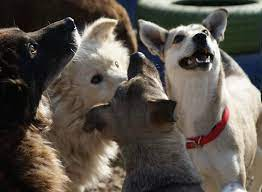

Where Love Finds a Home. We're here to rescue, care for, and connect pets with their forever families. Join us in giving every paw a chance at a brighter future. Donate
In the heart of our community lies a beacon of hope and compassion for animals in need—4Paws Animal Shelter. Our shelter's history is a testament to the unwavering dedication of individuals who shared a common dream of creating a safe haven for animals. Here is the heartwarming story of our shelter's journey.
Our story begins in 2017, when a group of passionate animal lovers came together with a shared vision: to provide refuge and care for homeless and mistreated animals. These pioneers recognized the pressing need for a shelter that would offer compassion, support, and hope to those animals that had nowhere else to turn.
In the early days, 4 Paws operated from a small, rented space with limited resources. Volunteers poured their time and energy into transforming this modest facility into a haven for animals. They worked tirelessly to rescue, care for, and find loving homes for the animals in their care.
Over the years, 4 Paws continued to grow and evolve. The shelter acquired a larger, purpose-built facility, complete with veterinary services, dedicated kennels, and spacious play areas for the animals. This expansion allowed the shelter to rescue and rehabilitate even more animals, transforming it into a vital resource for the community.
